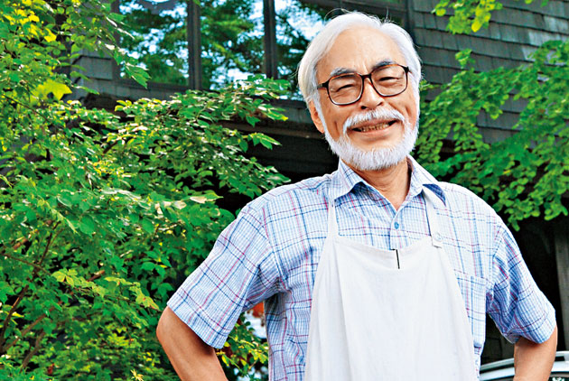

神隱少女 霍爾的移動城堡 天空之城出生於1941年1月5日，是一位知名日本動畫導演、動畫師及漫畫家，他曾經使用的筆名包括秋津三朗與
照樹務，目前他住在埼玉縣所澤市。
宮崎駿畢業於自杉並區立永福小學校、杉並區立大宮中學校、東京都立豊多摩高等學校及學習院大學政治
經濟學部。
宮崎駿與高畑勲共同創立受到國際上廣泛讚譽的動畫工作室－吉卜力工作室。宮崎駿的作品獲得相當大的
成功，與美國華特·迪士尼、英國動畫師尼克·帕克以及動作捕捉先驅美國動畫家羅伯·湛米基斯相提並論。
他也被《時代雜誌》認為是最具影響力的人物。 宮崎駿在東映動畫公司開始他的職業生涯，並參加《格
列佛的宇宙旅行》的製作。他在這部作品中提出自己的想法，並最終成為電影的結局。
他在動畫產業以各種不同的角色參與工作，直到他在1979年執導第一部動畫長片《魯邦三世卡里奧斯特
羅之城》。在他的下一部電影《風之谷》獲得廣泛的讚譽，他與高畑勲共同創立吉卜力工作室，並繼續作
許多作品，直到完成《魔法公主》之後，宮崎駿選擇暫時退休。在休息一陣子之後，宮崎駿在2001年完
成動畫《神隱少女》，並持續在動畫界活躍至今。
雖然宮崎駿的電影在日本一直都享有巨大的商業及藝術上的成功，但是西方世界基本上對他的了解並不深，
直到米拉麥克斯影業將他在1997年執導的電影《魔法公主》以DVD的形式公開發行之後，他在西方世界
的知名度才逐漸上升。《魔法公主》上映當時是日本史上票房最高的電影，直到1997年另一部電影《鐵
達尼號》上映之後才超過它。《魔法公主》也是第一部在日本電影金像獎贏得最佳影片獎的動畫電影。
他的下一部影片《神隱少女》在日本的票房超過《鐵達尼號》，還贏得了日本電影金像獎最佳影片獎，
也是第一部贏得美國奧斯卡獎奧斯卡最佳動畫長片獎的日本動畫。他執導的許多其他電影也獲得許多不同
的國際獎項。 一些主題在宮崎駿的電影中經常出現，例如人類對於自然及科技之間的關係，難以維持的
和平主義倫理等。宮崎駿的女性主義思想經常反映在電影當中，所以電影中的主角往往是堅強且獨立的女
孩或年輕女性。